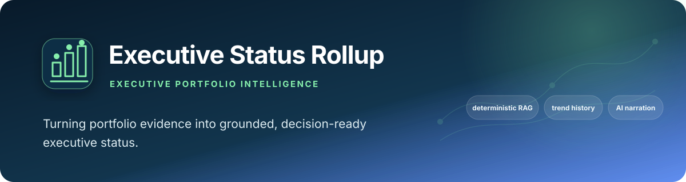

Portfolio project: deterministic scoring with an LLM at the edge
Executive Status Rollup
Rules decide the status, Claude only narrates it
A weekly Red/Amber/Green rollup over a Jira portfolio: scored by deterministic rules (not an LLM), narrated by Claude, and tracked week over week so a status flip is visible instead of silently overwritten. It is a fixed script, not an agent loop.
See what is measuredView the repoWhat is not built
- 9 unit tests passing
- CI green on the latest commit when checked
- Live Jira data (PGMAUTO), not simulated
- Slack post ungoverned if agent-control-tower is not importable
- Narration vs status not checked in code
- No eval of the narration

01
The problem
Executive status reporting is usually a manual Friday-afternoon reconstruction across tickets, channels and memory. A model asked to eyeball a ticket and guess a colour gives an answer nobody can defend under questioning.
This project keeps the status decision separate from its narration: the RAG colour comes from testable rules over due dates, staleness and blocked children that Claude never touches.
A wrong status is a bug you can test
test_health_scorer.pypins down what red means. A regression in the rules fails a test instead of reaching a reader.Narration can be removed
Claude writes the prose and never touches the colour. With the model turned off, the rollup still produces the same Red/Amber/Green calls, without the write-up.
Memory between runs
trend.pykeeps a week-over-week history, so a quiet regression shows up as a visible flip.
02
How it works
run_rollup.py pulls Jira, scores each workstream with rules, records the week-over-week flips, and only then calls Claude to write up the given statuses and facts without changing them.
Stages, one at a time
Stage 1 Pull Jira
jira_client.py reads the PGMAUTO project through /rest/api/3/search/jql, and build_workstreams() groups issues by Epic.
Stage 2 Score by rules
health_scorer.score_workstream uses due dates, staleness and blocked children. No model is involved; it is unit-tested.
Rules are the author's thresholds; no committed result compares them with a human status call.
Stage 3 Diff against last week
trend.py reads and writes history/rag_history.json and records status flips.
Stage 4 Narrate
narrator.narrate prompts Claude to write up the given statuses and facts without changing them.
Nothing in code checks that the prose matches the computed statuses or facts; that rests on the prompt.
Stage 5 Deliver
The report is printed and saved to a file. An optional Slack post is gated only if agent-control-tower is importable.
If that checkout is missing, the post goes out directly: no approval prompt and no audit record.
03
What is measured
This project has no evaluation harness: the scorer is deterministic, so it is covered by pytest instead (9 tests, passing; re-run locally for this page). What is below is one example output and the bugs the README documents.
Copied from the README's output example, produced from the live PGMAUTO Jira project (not simulated).
| Status | Workstream | Reason given |
|---|---|---|
| Red | Automated Inventory Reconciliation System (AIRS) | No update in 26 days; only 1 of 2 child issues done. |
| Red | Automated Employee IT Onboarding Pipeline | No update in 68 days, the longest stale gap in the portfolio. |
| Amber | Customer Self Service Portal | No update in 68 days. |
| Green | None | None |
Caveat A single pasted example from the README; no result file is committed. It is a small, self-made Jira project, so this shows the pipeline running, not accuracy on a real portfolio. The prose summary is Claude's and is not checked against the scorer in code.
Source: README, Output example
Self-reported in the README, not independently verified here beyond the 9 passing tests.
| Bug | How it was caught |
|---|---|
The Jira Search API built against (/rest/api/3/search) returns HTTP 410 | Testing against the real project; migrated to /rest/api/3/search/jql |
datetime.fromisoformat could not parse Jira timestamps like -0700 on Python 3.9 | test_health_scorer.py: 8 of 9 tests failed on the first run |
A resolved credential did not propagate (narrator.py read os.environ directly) | Fixed by passing the key as an explicit function argument |
Caveat These are anecdotes from building the tool, not measurements.
Source: README, Real bugs found building this
04
Architecture pattern
Pattern Deterministic pipeline with LLM at the edges: rules decide status, Claude only narrates.
It is a fixed script, not an agent loop. The status decision and the trend diff are code; the model only writes the prose from the scorer's output, so its wording cannot change a status. The only human gate is on the optional Slack post, and only if the sibling agent-control-tower checkout is importable (interactive y/N); saving the report to a file is never gated.
- Jira: PGMAUTOlive project
- jira_client.pybuild_workstreams groups issues by Epic
- health_scorer.pydeterministic RAG rules, 9 unit tests
- trend.pyweek-over-week diff with history/rag_history.json
- Claude narrator.pywrites the prose, never the status
- Report and optional Slack postfile, terminal, Slack gated only if agent-control-tower is importable
Mermaid diagram and engineering decisions in the repo README
05
Competencies demonstrated
Portfolio governance
Aggregates workstreams into a comparable executive health view.
Decision-quality design
Deterministic status rules stay separate from narrative generation.
Trend management
Week-over-week history makes deterioration and recovery visible.
Systems integration
Connects Jira evidence, local history, Claude narration and an optional Slack post.
Operational credibility
Documents real API migrations, timestamp defects and a credential propagation fix.
06
What is not built or not verified yet
Taken from the repository's README (Architecture pattern, Honest limit). These are real gaps, listed on purpose.
- limit
The Slack post can be ungoverned
The approval prompt exists only if the sibling
agent-control-towercheckout is importable. If it is missing, the post goes out directly: no approval prompt, no audit record (the script only prints a note after posting). - limit
Narration is not checked against the statuses
Nothing in code checks that the narration matches the computed statuses or facts. A reader should trust the rule output over the prose.
- limit
The narration model call is not governed
It is not routed through agent-control-tower.
- not verified
No eval and no committed result file
There is no eval harness (by design for the scorer) and nothing evaluates the narration. The output example in the README is a single pasted run on a small, self-made Jira project.
- not built
Tests beyond the scorer
The 9 tests cover
health_scorer.py. The repo has no tests forjira_client.py,trend.pyornarrator.py.
07
Roadmap
- DoneDeterministic RAG scorer with 9 unit tests
- DoneWeek-over-week trend history, Claude narration, optional Slack post
- Not doneOpen gap: a check that the narration matches the computed statuses
- Not doneOpen gap: an approval step for the Slack post when agent-control-tower is not importable